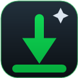

Scan the page
Review image files found in the page’s main content. Explore sections stay out of results unless you switch them on.
A browser companion for DeviantArt
See the image variants a page makes available, compare dimensions and file sizes, then save the versions you want.
Independent utility. Not affiliated with DeviantArt.
Illustrative preview
Artwork first. File details when you need them.
Deviation Lens keeps image discovery close to the page you’re already viewing.A shorter route from page to file
Open the side panel on a DeviantArt page to see supported image variants collected in one place.
Review image files found in the page’s main content. Explore sections stay out of results unless you switch them on.
Check dimensions, format, and estimated size to choose the version that fits your needs.
Download the best available image, selected results, or copy image URLs for later.
Your page, your filters
Keep DeviantArt Explore sections excluded by default, or include them with one persistent setting. When scanning outside DeviantArt, enable the any-page option and approve site access in Chrome.
Local by design
Deviation Lens reads the active page to find image URLs and details after you open or rescan the extension. Preferences stay in local extension storage. Downloads are made from the image source through Chrome or the selected folder.
Read the privacy policy
Deviation Lens
The store listing link will appear here after publication.